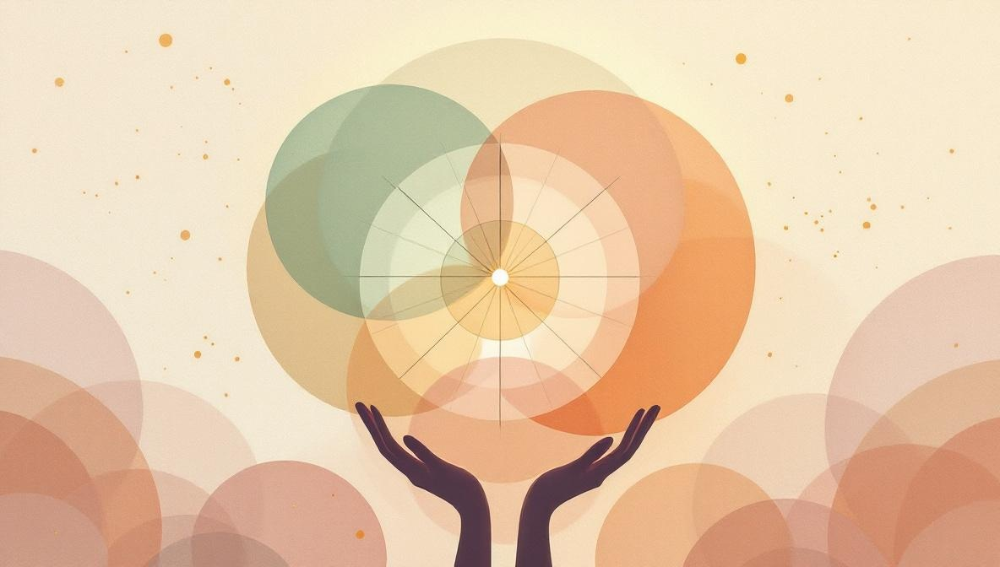

I due zodiaci: tropicale vs siderale
La differenza più importante tra astrologia vedica e occidentale è lo zodiaco stesso. Entrambi i sistemi dividono il cielo in dodici segmenti di 30 gradi, ma non ancorano quei segmenti allo stesso punto di riferimento.
L'astrologia occidentale usa lo zodiaco tropicale. L'inizio dell'Ariete è fissato all'equinozio di primavera nell'emisfero settentrionale — il momento in cui il Sole attraversa l'equatore celeste a marzo. Lo zodiaco ruota con le stagioni, non con le stelle.
L'astrologia vedica usa lo zodiaco siderale. I segni sono ancorati alle effettive costellazioni stellari. Quando un astrologo vedico dice che il Sole è in Ariete, intende che il Sole, dal punto di vista della Terra, è fisicamente davanti alla costellazione dell'Ariete in quel giorno.
I due zodiaci coincidevano — circa 2.000 anni fa. Ma l'asse terrestre oscilla lentamente in un ciclo di 26.000 anni, un effetto chiamato precessione degli equinozi. Ogni anno, il punto equinoziale si sposta indietro di circa 50 secondi d'arco rispetto alle stelle. Due millenni di deriva hanno lasciato lo zodiaco tropicale circa 24 gradi avanti rispetto a quello siderale. Questo scarto si chiama ayanamsa in sanscrito.
La conseguenza pratica: la maggior parte delle persone si ritrova un segno solare diverso in ciascun sistema. Una persona nata il 5 aprile è Ariete in astrologia occidentale e Pesci in vedica. Una persona nata il 25 novembre è Sagittario in occidentale e Scorpione in vedica. Lo scarto non è un errore in nessuno dei due — riflette ciò che ciascuno sta effettivamente misurando.
Confronto fianco a fianco
Oltre allo zodiaco, le due tradizioni divergono nel modo in cui trattano pianeti, case, tempistiche e punti focali di una lettura. Ecco la mappa rapida:
| Aspetto | Vedica (Jyotisha) | Occidentale |
|---|---|---|
| Zodiaco | Siderale — fisso alle costellazioni | Tropicale — fisso all'equinozio |
| Origine | Subcontinente indiano, codificata nel Vedanga Jyotisha (~1400 a.C.) e raffinata nei trattati sanscriti classici | Mediterraneo ellenistico, ~II secolo a.C., con influenze babilonesi ed egizie |
| Focus principale | Segno lunare e nakshatra (mansione lunare) | Segno solare, ascendente e aspetti |
| Pianeti utilizzati | 9 graha: Sole, Luna, Marte, Mercurio, Giove, Venere, Saturno, Rahu, Ketu | 10 pianeti inclusi Urano, Nettuno, Plutone |
| Case | Case a segno intero (un segno per casa) | Più spesso Placidus o Koch (case non uguali) |
| Tecnica di tempistica | Vimshottari Mahadasha — la vita divisa in periodi planetari per un totale di 120 anni | Transiti, progressioni, ritorno solare |
| Mansioni lunari | 27 nakshatra, centrali per l'interpretazione | Non usate nell'astrologia occidentale tradizionale |
| Sensibilità all'orario di nascita | Alta — orario esatto cruciale per il Lagna e i calcoli dei dasha | Media — necessario per l'ascendente e le cuspidi delle case, meno critico per la lettura per segno |
Come si legge una carta natale vedica
Un astrologo vedico parte tipicamente dal Lagna — il tuo ascendente al momento della nascita. Il Lagna ancora l'intera carta, definendo quali pianeti cadono in quali case. L'ancora successiva è il segno lunare, che nell'astrologia vedica ha più peso del segno solare ed è considerato la sede della mente.
La posizione esatta della Luna determina anche la tua nakshatra — una delle 27 mansioni lunari, ciascuna associata a una divinità, un potere e un insieme di tendenze psicologiche. La nakshatra è spesso ciò a cui un astrologo vedico ricorre quando vuole descrivere come ti senti dall'interno, piuttosto che come appari dall'esterno.
Dalla nakshatra della Luna, l'astrologo calcola il tuo Vimshottari Mahadasha — un ciclo di 120 anni che divide la tua vita in periodi planetari. In qualsiasi momento ti trovi all'interno di un dasha maggiore (che può durare fino a 19 anni per Venere, o solo 6 per il Sole) e di un sottoperiodo al suo interno. La tempistica vedica si costruisce attorno a questi cicli. Una lettura dedica spesso tanto tempo a quale dasha stai attraversando quanto alla carta natale stessa.

Come si legge una carta natale occidentale
L'astrologia occidentale, come si pratica oggi, si appoggia molto su tre àncore: il segno solare (la tua identità centrale), il segno ascendente (come incontri il mondo) e il segno lunare (la tua vita emotiva interiore). La maggior parte delle letture parte da questo trio per poi muoversi verso gli altri pianeti.
Lo strato successivo sono gli aspetti — gli angoli geometrici tra i pianeti (congiunzione a 0°, opposizione a 180°, trigono a 120°, quadrato a 90°, sestile a 60°). L'astrologia occidentale dedica molta energia agli aspetti, che considera il motore delle dinamiche di personalità. 'Quadrato tra Marte e Saturno' è una frase che sentirai in quasi ogni lettura occidentale e quasi mai in una vedica.
L'astrologia occidentale usa anche Urano, Nettuno e Plutone — tre pianeti scoperti dopo che il sistema era già consolidato ma assorbiti nella pratica moderna. Vengono tipicamente usati per descrivere temi generazionali e cambiamenti di vita a lento svolgimento. Nessuno di loro compare nelle carte vediche classiche.
Quale dovresti scegliere?
Nessuna delle due tradizioni è empiricamente più accurata dell'altra. Il test controllato più rigoroso sull'astrologia — lo studio in doppio cieco del 1985 di Shawn Carlson pubblicato su Nature — ha rilevato che gli astrologi, a cui era chiesto di abbinare carte natali a profili di personalità, performavano al livello del caso. Le revisioni successive sono giunte alla stessa conclusione. L'astrologia, in entrambe le tradizioni, è un linguaggio simbolico per l'auto-riflessione, non uno strumento di misurazione.
Quindi la scelta riguarda quale linguaggio vuoi imparare:
- Scegli l'occidentale se sei attratto da un sistema focalizzato su personalità, psicologia e narrazione interiore — e se non hai un orario di nascita esatto. L'astrologia occidentale moderna, soprattutto nella sua scuola psicologica, è stata fortemente influenzata da Carl Jung e Liz Greene e si legge naturalmente come un linguaggio di auto-comprensione.
- Scegli la vedica se hai un orario di nascita esatto e sei interessato alla tempistica degli eventi di vita. Il sistema dei Mahadasha dà alle letture vediche una struttura cronologica che l'astrologia occidentale replica solo in parte tramite i transiti. L'astrologia vedica è anche strettamente intrecciata con un contesto filosofico e rituale più ampio che alcune persone trovano significativo.
- Prova entrambe se puoi. Non sono in competizione. Molte persone scoprono che una tradizione parla a una domanda che l'altra non affronta, e leggere lo stesso momento di nascita attraverso due linguaggi fa spesso emergere modelli che una singola carta non mostrerebbe.
Ciò che conta più del sistema è l'astrologo. Un praticante esperto — in entrambe le tradizioni — farà domande attente, terrà la lettura con leggerezza ed eviterà di fare previsioni su salute, morte o decisioni specifiche da prendere. Chiunque in entrambi i sistemi prometta certezze sul futuro, o ti dica che un rimedio 'sistemerà' un pianeta, opera al di fuori dei limiti etici del proprio mestiere.
Cerchi un astrologo serio?
Holistic Unity ti mette in contatto con astrologi verificati nelle tradizioni vedica e occidentale. Leggi i profili, sfoglia le recensioni e prenota una sessione online — senza il rumore dei siti di oroscopi generici.
Trova un AstrologoFonti e riferimenti
- Precessione degli equinozi: Royal Museums Greenwich, «The precession of the equinoxes» — rmg.co.uk. Usato qui per il ciclo di oscillazione di 26.000 anni e per la cifra di ~50 secondi d'arco/anno di deriva.
- Carlson, S. (1985). «A double-blind test of astrology.» Nature, 318, 419–425. Lo studio controllato più citato sull'astrologia natale; gli astrologi hanno performato al livello del caso nell'abbinare carte a profili di personalità.
- Jyotisha (astrologia vedica): Encyclopaedia Britannica, «Jyotisha» — britannica.com/topic/Jyotisha. Usata per origini, struttura e sistema delle 27 nakshatra.
- Astrologia occidentale – origini ellenistiche: Encyclopaedia Britannica, «Astrology» — britannica.com/topic/astrology. Usata per il lignaggio babilonese, egizio ed ellenistico della tradizione occidentale.
- NASA, «What is precession?» Spiegazioni NASA Earth Observatory e NASA Solar System Exploration. Citata qui come riferimento astronomico per lo slittamento dell'equinozio; fonte istituzionale citata per nome poiché gli URL delle spiegazioni NASA cambiano occasionalmente.
- Mercer, J. R. (1995). Studi su astrologia e personalità, sintetizzati in: Dean, G. & Kelly, I. W. (2003), «Is astrology relevant to consciousness and psi?», Journal of Consciousness Studies, 10(6–7), 175–198. Revisione indipendente dei test empirici dell'astrologia in entrambe le tradizioni.
Domande frequenti
Qual è la differenza principale tra astrologia vedica e occidentale?
I due sistemi usano zodiaci diversi. L'astrologia occidentale usa lo zodiaco tropicale, ancorato agli equinozi — quindi l'inizio dell'Ariete è fissato all'equinozio di primavera ogni anno. L'astrologia vedica usa lo zodiaco siderale, ancorato alla posizione effettiva delle stelle. A causa della lenta oscillazione dell'asse terrestre (precessione), i due zodiaci si sono separati di circa 24 gradi, il che significa che la maggior parte delle persone si ritrova un segno solare diverso in ciascun sistema.
Perché il mio segno solare è diverso in una carta vedica?
Perché l'astrologia vedica misura le posizioni planetarie rispetto alle costellazioni reali, mentre l'astrologia occidentale le misura rispetto alle stagioni. Negli ultimi 2.000 anni, il punto equinoziale si è spostato indietro di circa 24 gradi rispetto alle stelle. Così una persona nata a fine marzo che è Ariete in astrologia occidentale è spesso Pesci in vedica — il Sole, il giorno della nascita, era ancora nella costellazione dei Pesci dal punto di vista siderale.
Quale è più accurata, vedica o occidentale?
Nessun sistema è più 'accurato' in senso scientifico — gli studi controllati, incluso il test in doppio cieco del 1985 di Shawn Carlson pubblicato su Nature, non hanno trovato che l'astrologia di nessuna delle due tradizioni preveda personalità o eventi meglio del caso. All'interno di ciascuna tradizione, l'accuratezza è una questione di coerenza interna e di abilità dell'astrologo. Sono quadri interpretativi diversi, non misurazioni concorrenti della stessa cosa.
Posso leggere la mia carta natale sia in astrologia vedica che occidentale?
Sì, e molte persone lo fanno. Alcuni trovano che un sistema risuoni più con la loro esperienza, altri apprezzano il contrasto. Una carta natale vedica si concentra molto sul segno lunare, la nakshatra (mansione lunare) e il periodo planetario Mahadasha in cui ti trovi. Una carta occidentale si concentra sul segno solare, l'ascendente e gli aspetti tra i pianeti. Mettono in evidenza strati diversi dello stesso momento di nascita.
Quali pianeti usa l'astrologia vedica?
L'astrologia vedica usa nove 'graha': Sole, Luna, Marte, Mercurio, Giove, Venere, Saturno, più Rahu e Ketu — i nodi lunari nord e sud, trattati come pianeti ombra. Non usa tradizionalmente Urano, Nettuno o Plutone, che erano sconosciuti quando il sistema fu sistematizzato. Gli astrologi vedici moderni a volte li incorporano, ma le letture classiche si basano sui nove originali.
Mi serve l'orario di nascita esatto per una carta natale vedica?
Sì, più che nell'astrologia occidentale. Il sistema vedico pone molta enfasi sull'ascendente (Lagna) e sul periodo Mahadasha calcolato dalla posizione della Luna alla nascita. Entrambi cambiano rapidamente — il Lagna cambia circa ogni due ore, e la Luna si muove di circa 12-15 gradi al giorno. Un errore anche di 15 minuti nell'orario di nascita può cambiare l'ascendente e spostare l'intera lettura. Se non hai un orario di nascita esatto, una carta occidentale che enfatizza il Sole e gli aspetti planetari sarà più stabile.